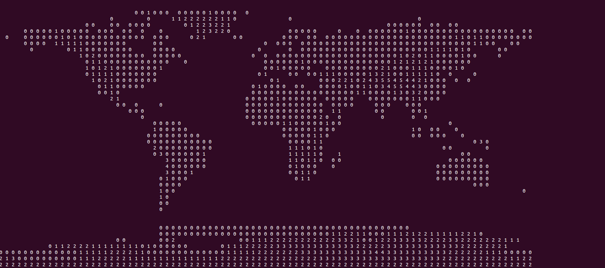

This page is about a small private project to play a bit with 3D graphics, just for the fun of it.
The first idea is to make a small model of our solar system with real physics (e.g. no pre calculated orbits, everything just reacts to the existing gravity forces.
After I found very detailed elevation data from NASA another idea was to add also some elevation data to the earth model. Here is a first proof of concept that the parsing of NASA's data did work
